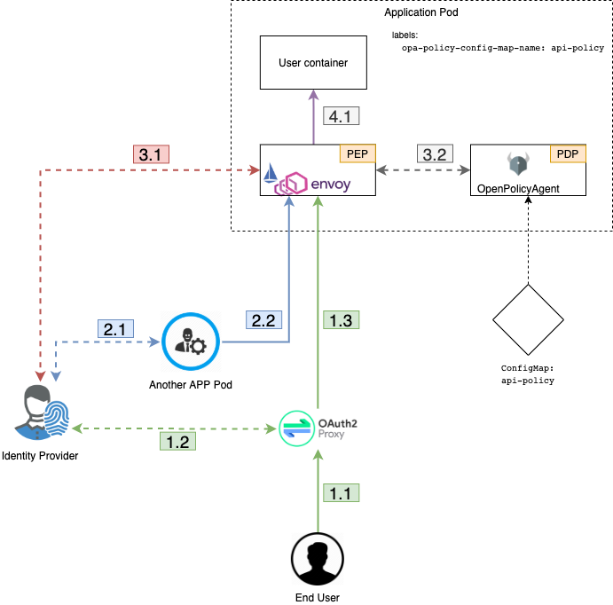

Security¶
Prime goals of ODAHU Security system is to provide authentication, authorization and give users a flexible access control management solution.
The first section Security overview shows the general design of authentication and authorization is described. Look at this section to have a deep understanding of how ODAHU security works under the hood or to learn basic concepts.
The second section Use built-in policies describes how to add users permissions to use ODAHU via your idP and ODAHU pre-defined roles
The third section Configure built-in policies describes how you can get more flexibility such as adding new roles, map attributes for ODAHU RBAC from JWT claims or writing your policy that could be more generic than RBAC like Access based access control.
Security overview¶
Component roles¶
There are some common terms related to access control management systems. In this documentation, the next ones are commonly used.
- Identity Provider (idP)
- A component that provides information about an entity (user or service). In ODAHU the role of idP can do any OpenID Connect compatible provider.
- Policy Enforcement Point (PEP)
- A component that enforces security policies against each request to API or other protected resources. In ODAHU the role of PEP plays Envoy proxy.
- Policy Decision Point (PDP)
- A component that decides whether the request (action in the system) should be permitted or not. In ODAHU role of PDP plays OpenPolicyAgent.
API Request lifecycle¶
To have a better understanding of how all ODAHU security components work together let’s review the API request lifecycle and describe what is happened for each HTTP request.
- HTTP Request could be made from the outside of the cluster perimeter.
- In this case, the request is handled by OAuth2Proxy via Kubernetes ingress controller
- OAuth2Proxy looks up cookies that contain JWT Token issued by idP. If there are no such cookies it redirects the request to idP. After successful login OAuth2Proxy set issued token to cookies (and also to) and send the request to upstream. Before proxying requests to upstream OAuth2Proxy add Authorization Request Header Field from the cookie automatically by setting it from the cookie.
- OAuth2Proxy send request to upstream.
- HTTP Request from inside the cluster perimeter. Such requests usually made by background processes inside the cluster
on behalf of service accounts.
- Service should previously authenticate in idP using OpenID Connect protocol. The most suitable way to authenticate services is OAuth2 Client Credentials Grant
- Service makes a request to API using issued JWT token as Authorization Request Header Field
- Envoy proxy as PEP that is configured as sidecar container by Istio Pilot for those ODAHU components that must be
protected ensures that security policy allows making this request to ODAHU API
- Envoy verifies JWT token in Authorization Request Header Field using JSON Web Token (JWT) Authentication filter
- Envoy makes a query to OpenPolicyAgent as PDP using External Authorization filter passing parsed JWT token from the previous step
- If request if permitted by OpenPolicyAgent it is sent to upstream (ODAHU API)
Use built-in policies¶
ODAHU is distributed with build-in policies that are written on Rego policy language.
Role based access control is implemented by default. But there is nothing you need to know about rego policies language until the set of pre-defined roles fits your needs. In this section, you can see such roles and how to manage them using Keycloak as an example of idP
Pre-defined roles overview¶
ODAHU has next predefined roles:
- ‘odahu_viewer’ – can do any GET requests to any API resources
- ‘odahu_data_scientist’ – allowed requests:
- Action: GET, Resource pattern: api/v1/connection
- Action: GET, Resource pattern: api/v1/packaging/integration
- Action: GET, Resource pattern: api/v1/toolchain/integration
- Action pattern: ALL, Resource pattern: api/v1/model/training
- Action pattern: ALL, Resource pattern: api/v1/model/packaging
- Action pattern: ALL, Resource pattern: api/v1/model/deployment
- ‘odahu_admin’ – can do any requests to any API resources
Example of role management with Keycloak¶
Because of ODAHU relies on any OpenID Connect provider as idP user roles are expected to be set as JWT Claims. How to assign roles of the user as JWT Claims depends on certain OpenID provider, but almost all of them provide such a feature. By default, ODAHU expects a list of roles in ‘realm_access.roles’ claim inside JWT token. (This is default roles location for Keycloak). But if you have another idP and can not configure it to pass roles in that claim you can configure mapper (see more in Customize default mapper). In this section we show how to (using Keycloak as idP):
Create ODAHU pre-defined roles in your idP¶
Create roles from section Pre-defined roles overview in your Keycloak as Realm Specific Roles.
- Select appropriate Keycloak realm
- Add clients from Pre-defined roles overview:
- odahu_viewer
- odahu_data_scientist
- odahu_admin
Set user role manually¶
To manually set up created role use User Role Mapping
Set user role automatically¶
If you don’t create and manage users in your realm manually but rather use Identity Broker then you can configure that all new users that will be exported from the broker will have certain ODAHU role by default.
To set default role create mapper with type ‘Hardcoded Role’ in broker settings as described in Keycloak Mapping Claims and Assertions.
Create a service account with some roles¶
If you are going to use ODAHU API from bot or service (not human) then you should use Service account.
Create OIDC client with access type Confidential Client Credentials and add some ODAHU roles to its service account as described in Adding or removing roles for client’s service account.
Configure built-in policies¶
In this section, different ways to manage access control in ODAHU is described
Built-in policies overview¶
ODAHU is distributed with a pre-defined set of OpenPolicyAgent policies. These policies implement simple Role based access control (RBAC).
Next features are implemented using Rego policy language:
- Set of predefined roles with assigned permissions
- Default mapper that match JWT Claims to attributes that ODAHU RBAC policy expects
- ODAHU RBAC core policy
These features are implemented in the next files:
- roles.rego – all odahu roles are listed here
- permissions.rego – permissions for roles
- input_mapper.rego – mapper to match JWT Claims to attributes ODAHU RBAC rely on. These attributes include:
- user – info about user or service who makes the request (this property contains roles attribute with a list of roles)
- action – HTTP verb of the request
- resource – URL of the request
- core.rego – core implementation of Role based access control.
All policies customization can be done on the stage of system configuration as described in installation guide
Extend roles¶
To define new custom roles you should just add it as a variable in file roles.rego
1 2 3 4 5 6 7 8 | package odahu.roles
admin := "admin"
data_scientist := "data_scientist"
viewer := "viewer"
# new role
connection_manager := "connection_manager"
|
Then you need to set permissions to that role in file permissions.rego
1 2 3 4 5 6 7 8 9 10 11 12 13 14 15 16 17 18 19 20 21 22 23 | package odahu.permissions
import data.odahu.roles
permissions := {
roles.data_scientist: [
[".*", "api/v1/model/deployment.*"],
[".*", "api/v1/model/packaging.*"],
[".*", "api/v1/model/training.*"],
["GET", "api/v1/connection.*"],
["GET", "api/v1/packaging/integration.*"],
["GET", "api/v1/toolchain/integration.*"]
],
roles.admin : [
[".*", ".*"]
],
roles.viewer : [
["GET", ".*"]
],
roles.connection_manager : [
[".*", "api/v1/connection.*"]
],
}
|
In this file, we:
- lines 20-22: add permissions to any request to api/v1/connection.* URL for a new role
Customize default mapper¶
You can configure mapper.rego to extend input that is passed to core.rego file with RBAC implementation
1 2 3 4 5 6 7 8 9 10 11 12 13 14 15 16 17 18 19 20 21 22 23 24 25 26 27 | package odahu.mapper
import data.odahu.roles
roles_map = {
"odahu_admin": roles.admin,
"odahu_data_scientist": roles.data_scientist,
"odahu_viewer": roles.viewer
}
jwt = input.attributes.metadata_context.filter_metadata["envoy.filters.http.jwt_authn"].fields.jwt_payload
keycloak_user_roles[role]{
role = jwt.Kind.StructValue.fields.realm_access.Kind.StructValue.fields.roles.Kind.ListValue.values[_].Kind.StringValue
}
user_roles[role]{
role = roles_map[keycloak_user_roles[_]]
}
parsed_input = {
"action": input.attributes.request.http.method,
"resource": input.attributes.request.http.path,
"user": {
"roles": user_roles
}
}
|
In this file, we:
- lines 5-9: map roles from jwt claims to policies roles from roles.rego
- lines 11-19: extract roles from claims and match them to policies roles
- lines 21-26: create input that is expected by file core.rego that contains resource, action and user’s roles
Create custom policies¶
If Role based access control is not enough for your purposes you can customize policies to use more general Access based access control. For this rewrite core.rego file or create your own rego policies
1 2 3 4 5 6 7 8 9 10 11 12 13 14 15 16 17 18 19 20 21 22 23 24 25 26 | package odahu.core
import data.odahu.mapper.parsed_input
import data.odahu.permissions.permissions
default allow = false
allow {
any_user_role := parsed_input.user.roles[_]
any_permission_of_user_role := permissions[any_user_role][_]
action := any_permission_of_user_role[0]
resource := any_permission_of_user_role[1]
re_match(action, parsed_input.action)
re_match(resource, parsed_input.resource)
}
allow {
parsed_input.action == "GET"
parsed_input.resource == "/"
}
allow {
parsed_input.action == "GET"
re_match("/swagger*", parsed_input.resource)
}
|
In this file, we:
- lines 8-16: allow access if there are required permissions for action and resource for at least one user’s roles
- lines 12-21: allow access to root for any user
- lines 23-26: allow access to swagger docs to any user